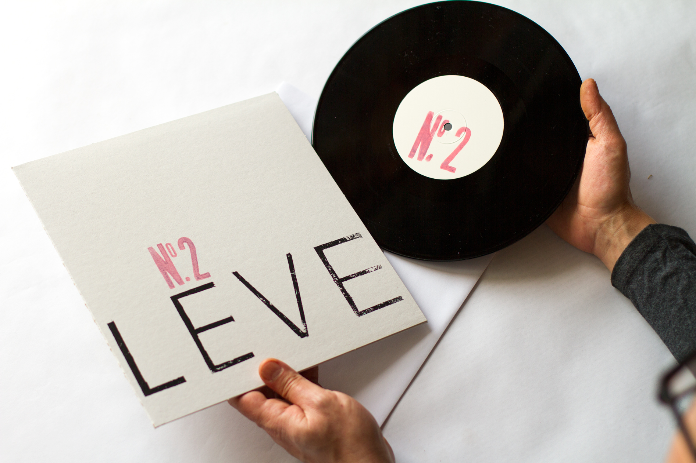
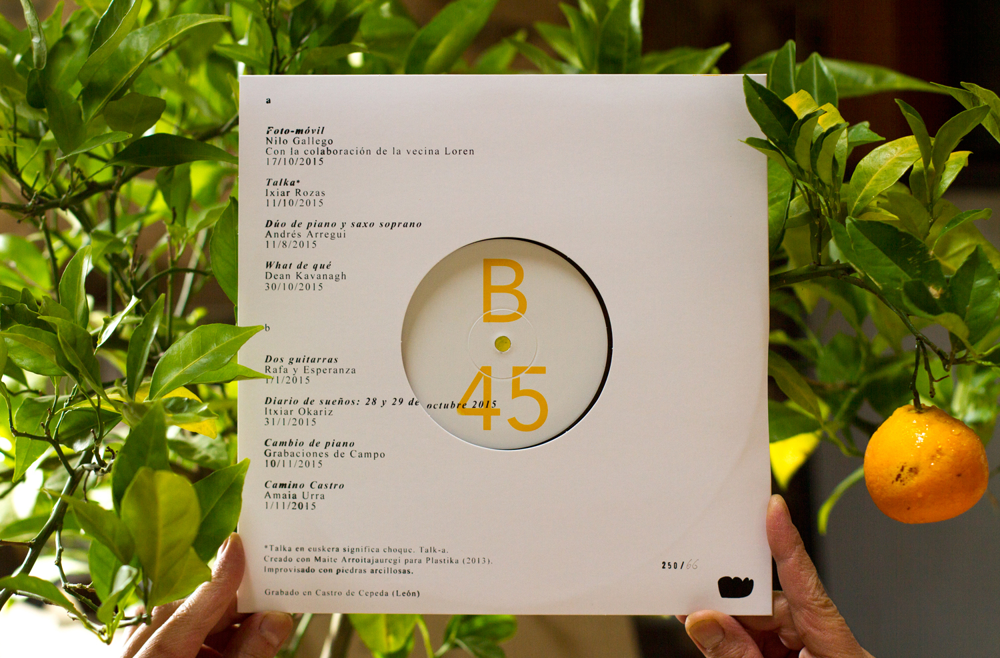
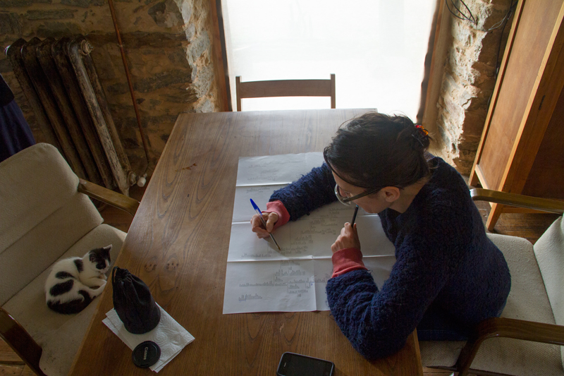
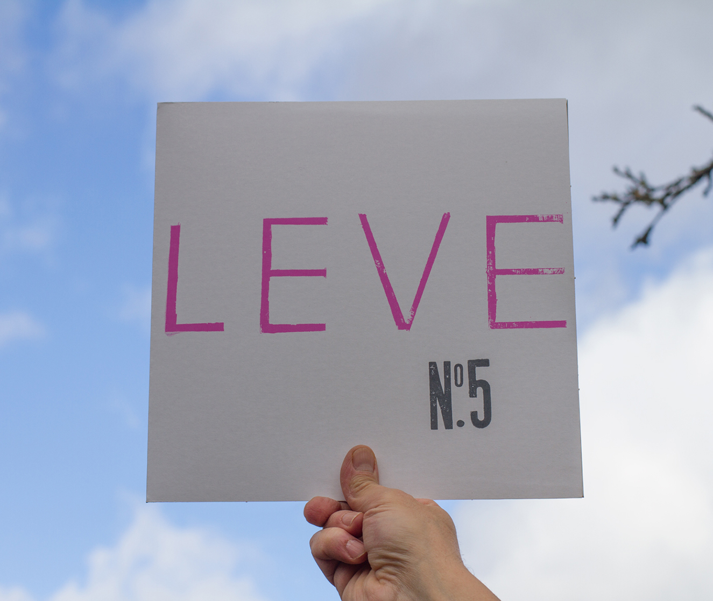
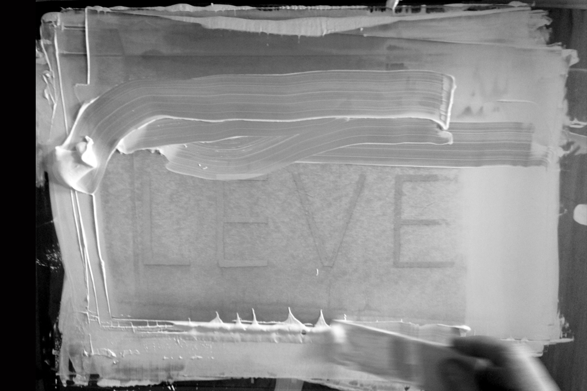
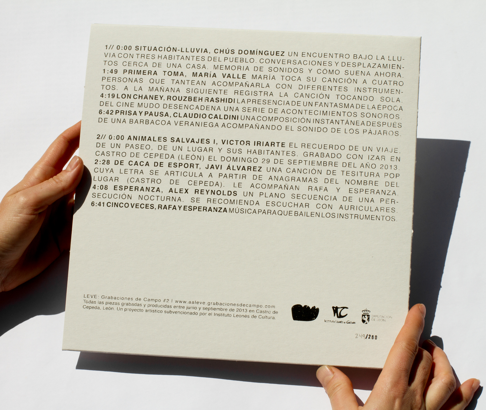
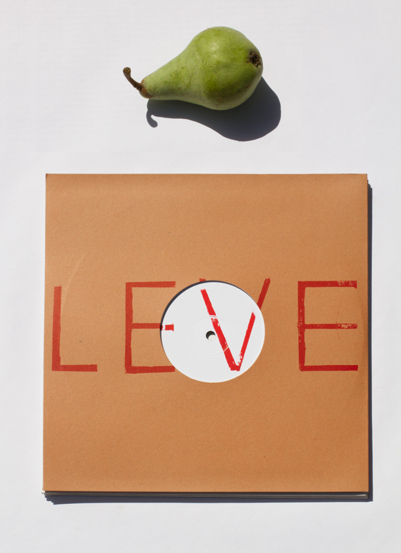
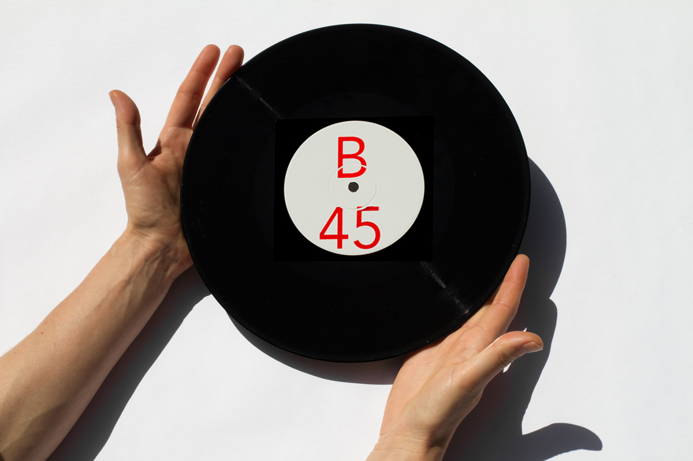
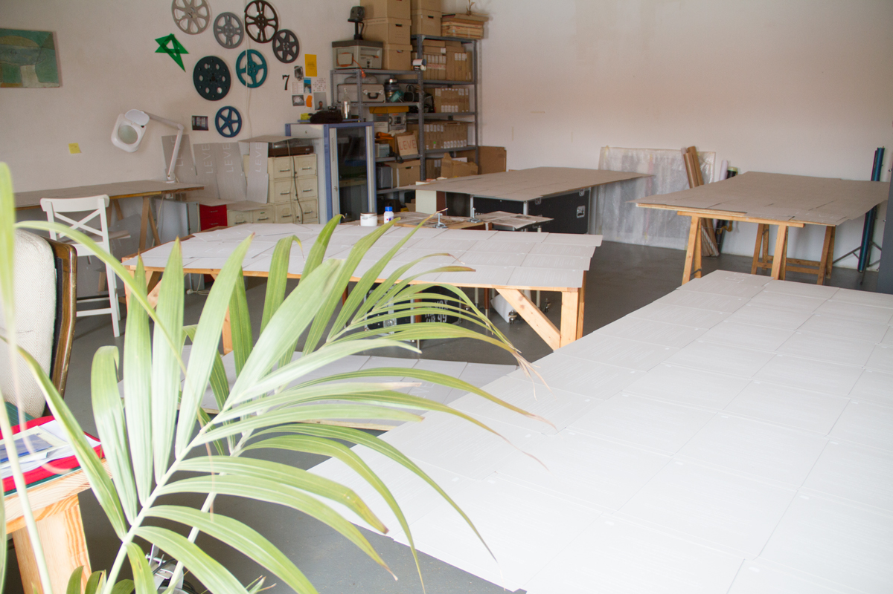
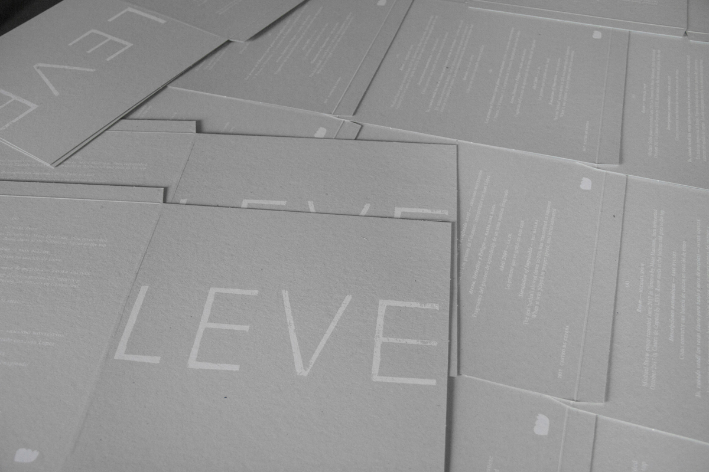

Iván Pérez, Grasshopper, Parámetros flotantes. In LEVE #5 (2016—2017)



Amaia Urra working on Camino Castro, in LEVE #4 (2015—2016)







2012—2019
7 editions of field-recordings on 45 rpm vinyl records
LEVE published sound editions conceptually inscribed in the idea of environment and field recording. Compiling site-specific works made by invited artists, participants stayed on location to respond with their work to a proposed “set of rules” related to site-specificity, duration and time of recording.
The editions are made on 45rpm 10 inch vinyl and artwork is silk-screen printed by hand. Funded by Instituto Leonés de Cultura.
LEVE is a collaborative art project (Esperanza Collado and Rafa Martínez del Pozo) initiated in 2010 to create and offer a space for dialogue, interchange and production in a natural environment of rural León, in northen Spain.
LEVE’s space is located in a low mountain range in the north of the country, specifically in La Cepeda area, surrounded by oak forests. The sound studio was constructed in this location, in an old barn and cattle stable that had been later refurbished with respect for its original construction materials: stone, mud, and bales of straw, which offer a distinctive acoustic and atmosphere.
LEVE #1
10” vinyl 45 rpm
250 copies silk-screen printed by hand
2012—2013
Participants: Lorena Álvarez, Esperanza Collado, Las Hermanas Diego, Laida Lertxundi, Maximilian Le Cain, Rafa Martínez del Pozo, Matrimonio, Roldán
LEVE #2
10” vinyl 45 rpm
250 copies silk-screen printed by hand
2013—2014
Participants: Javi Álvarez, Claudio Caldini, Chús Domínguez, Víctor Iriarte, Rafa y Esperanza, Rouzbeh Rashidi, Alex Reynolds, María Valle
LEVE #3
10” vinyl 45 rpm
250 copies silk-screen printed by hand
2014—2015
Participants: Usue Arrieta, Fergus Daly, Víctor Esther, Francisco Gálvez, Jon Mantxi, Marko Naverán Mantzisidor, Isabel de Naverán, Julius Richard, Vicente Vázquez
LEVE #4
10” vinyl 45 rpm
250 copies silk-screen printed by hand
2015—2016
Participants: Andrés Arregui, Nilo Gallego, Grabaciones de Campo, Dean Kavanagh, Itziar Okariz, Rafa y Esperanza, Ixiar Rozas, Amaia Urra
LEVE #5
10” vinyl 45 rpm
250 copies silk-screen printed by hand
2016—2017
Participants: Anónimo, Guilhem All, Núria Gómez Gabriel, Iván Pérez, Serrín, Belén Sola, Alex Waterman, Silvia Zayas
LEVE #6
10” vinyl 45 rpm
250 copies silk-screen printed by hand
2017—2018
Participants: Javier Aquilué, Érik Bullot, María José Hasta, Rei Hayama, Juan López, La Jr., Armando Montesinos, Michael Snow
LEVE #7
10” vinyl 45 rpm
250 copies silk-screen printed by hand
2018—2019
Participants: Beatriz Page, Bruno Delgado Ramo, David Ferrando Giraut, Spatial, Raúl Hidalgo, Fluzo, Sally Golding, Sara Padilla